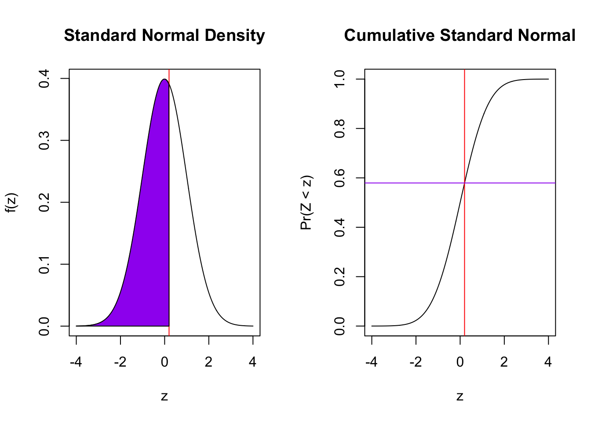

par(mfrow=c(1,2))
plot(x=seq(-4,4, by=0.01), y=dnorm(seq(-4,4, by=0.01)), type="l", xlab="z", main="Standard Normal Density", ylab="f(z)")
plot(x=seq(-4,4, by=0.01), y=pnorm(seq(-4,4, by=0.01)), type="l", xlab="z", main="Cumulative Standard Normal", ylab="Pr(Z < z)")A Proportions Example
We start with an equation:
\[ z = \frac{\hat{\pi} - \pi}{\sqrt{\frac{\pi(1-\pi)}{n}}} \]
In language, the difference between the sample proportion (recall that with only two outcomes the sample proportion \(\hat{\pi}\) is between 0 [all No’s] and 1 [all Yes’s]) and the true probability \(\pi\) divided by the standard error of the proportion \(\sqrt{\frac{\pi(1-\pi)}{n}}\) has a \(z\) [Normal(0,1)] distribution under the condition that \(n\pi > 10\) and \(n(1-\pi) > 10\). I will show the left hand side: \(z\).
Now let’s take a step to put it in the metric of probability. The equation needs a probability on the left and right hand sides. On the right, a probability minus a probability has to have that metric. On the left, we have multiplied both sides by \(\sqrt{\frac{\pi(1-\pi)}{n}}\) [which is the square root of the product of two probabilities divided by the sample size so it has metric probability]. That gives us,
\[ z(\sqrt{\frac{\pi(1-\pi)}{n}}) = \hat{\pi} - \pi. \] We can read this as z [with metric standard errors] times the standard error of the probability is equal to the difference between the sample estimate and the true probability. To be concrete in an example, let’s take the example of 51 supporters of a mayor out of 100 surveyed. That let’s us calculate the full left hand side; this is often known as the margin of error (MOE). We can show it’s distribution for this example. \[ \sqrt{\frac{.51(1-.51)}{100}} = 0.05 \] Apply that to the plot.
par(mfrow=c(1,2))
plot(x=seq(-4,4, by=0.01)*0.05, y=dnorm(seq(-4,4, by=0.01)), type="l", xlab="MOE", main="Margin of Error for 51 of 100", ylab="f(MOE)")
plot(x=seq(-4,4, by=0.01)*0.05, y=pnorm(seq(-4,4, by=0.01)), type="l", xlab="MOE", main="Cumulative MOE for 51 of 100", ylab="Pr(=< MOE)")A Confidence Interval
Now we need one more concrete piece. With what probability do we wish to characterize the underlying level of support [the probability of Support]. Let’s arbitrarily take 95%. The empirical rule says that is plus or minus 2 standard deviations/errors [it is precisely 1.96]. To see that, we will get two vertical[horizontal] lines in the left[right] plot.
par(mfrow=c(1,2))
plot(x=seq(-4,4, by=0.01)*0.05, y=dnorm(seq(-4,4, by=0.01)), type="l", xlab="MOE", main="95% Margin of Error for 51 of 100", ylab="f(MOE)")
abline(v=qnorm(c(0.025,0.975))*0.05, col="red")
plot(x=seq(-4,4, by=0.01)*0.05, y=pnorm(seq(-4,4, by=0.01)), type="l", xlab="MOE", main="95% MOE for 51 of 100", ylab="Pr(=< MOE)")
abline(h=c(0.025,0.975), col="red")
abline(v=qnorm(c(0.025,0.975))*0.05, col="red")With 95% confidence, the difference between the sample and true probability given 51 out of 100 ranges plus or minus 0.098.
Our best guess is the sample proportion
To solve for the true probability, we can write the distribution
\[ \pi = \hat{\pi} - z(\sqrt{\frac{\pi(1-\pi)}{n}}) = \hat{\pi}. \]
Finally, we can say that, with 95% confidence, the true probability ranges between 0.412 and 0.608 because 51 of 100 plus or minus 0.098 gives us those boundaries. Let’s show the distribution.
par(mfrow=c(1,2))
plot(x=0.51-seq(-4,4, by=0.01)*0.05, y=dnorm(seq(-4,4, by=0.01)), type="l", xlab=expression(paste(pi)), main="95% CI for 51 of 100", ylab="f(pi)")
abline(v=0.51-qnorm(c(0.025,0.975))*0.05, col="red")
plot(x=0.51+seq(-4,4, by=0.01)*0.05, y=pnorm(seq(-4,4, by=0.01)), type="l", xlab=expression(paste(pi)), main="95% CI for 51 of 100", ylab="Pr(=< pi)")
abline(h=c(0.025,0.975), col="red")
abline(v=0.51-qnorm(c(0.025,0.975))*0.05, col="red")An Hypothesis Test?
If we are willing to claim that the true probability \(\pi\) is equal to some value, then we can combine that with the sample proportion to ask how likely are the data given what we claim? What changes from the previous?
Two things. Because we are making a claim about the true value, we will have to substitute that into the formula for the standard error [it is a function of \(\pi\)] and into the value in the numerator. Second, we will need to set a rule for deciding that something is implausible enough to conclude that our hypothesis is unsustainable given the data.
\[ z = \frac{\hat{\pi} - \pi}{\sqrt{\frac{\pi(1-\pi)}{n}}} \]
To plot this, let’s go back the first plot.
par(mfrow=c(1,2))
plot(x=seq(-4,4, by=0.01), y=dnorm(seq(-4,4, by=0.01)), type="l", xlab="z", main="Standard Normal Density", ylab="f(z)")
plot(x=seq(-4,4, by=0.01), y=pnorm(seq(-4,4, by=0.01)), type="l", xlab="z", main="Cumulative Standard Normal", ylab="Pr(Z < z)")
The metric here is the standard error. The way to think about it is: if I saw a sample proportion that was \(z\) standard errors from my hypothesis, I would conclude that I was wrong. In classical statistics language, we have a significance level that preordains how unlikely the sample value must be to reject our claim. A significance level of 5% would mean that we will make this judgement if the probability is less than 0.05. Where that 0.05 is located forms the final key question. Suppose we wanted to evaluate our hypothesis against an alternative that it could be either bigger or smaller; that would place 0.05/2 or 0.025 probability in each tail of the z above. I show this below.
par(mfrow=c(1,2))
plot(x=seq(-4,4, by=0.01), y=dnorm(seq(-4,4, by=0.01)), type="l", xlab="z", main="Standard Normal Density", ylab="f(z)")
abline(v=qnorm(c(0.025,0.975)), col="red")
plot(x=seq(-4,4, by=0.01), y=pnorm(seq(-4,4, by=0.01)), type="l", xlab="z", main="Cumulative Standard Normal", ylab="Pr(Z < z)")
abline(v=qnorm(c(0.025,0.975)), col="red")
abline(h=c(0.025,0.975), col="red")In language, we would reject any claim that is more the 1.96\(\approx 2\) standard errors away from the sample value. But this is often not the real question. I don’t want to know if my hypothesis can withstand scrutiny against alternatives both above and below; I more often have a direction in mind. For elections, I would like to rule out 0.5 – a tie – in favor of a win [the probability is greater than 0.5]. To consider that question, I need only focus on the 0.05 probability in the lower or upper tail.
What’s a p-value?
To define this, I am going to need a bit more specificity again, I need to define my hypothesis on \(\pi\). First, let’s examine the claim that \(\pi = 0.5\) against an alternative that \(\pi \neq 0.5\).
\[ z = \frac{\hat{\pi} - \pi}{\sqrt{\frac{\pi(1-\pi)}{n}}} \]
in the abstract and, in the example, we obtain:
\[ z = \frac{0.51 - 0.5}{\sqrt{\frac{0.5(1-0.5)}{100}}} \]
(0.51 - 0.5)/sqrt(0.5*0.5/100)[1] 0.2How likely I am to see something that is 0.2 standard errors [or more] above and below my claim?
par(mfrow=c(1,2))
plot(x=seq(-4,4, by=0.01), y=dnorm(seq(-4,4, by=0.01)), type="l", xlab="z", main="Standard Normal Density", ylab="f(z)")
abline(v=c(-0.2,0.2), col="red")
polygon(x=c(-4,seq(-4,-0.2, by=0.01)), y=c(dnorm(seq(-4,-0.2, by=0.01)), 0), col="green")
polygon(x=c(seq(0.2, 4, by=0.01), 4), y=c(0,dnorm(seq(0.2,4, by=0.01))), col="green")
plot(x=seq(-4,4, by=0.01), y=pnorm(seq(-4,4, by=0.01)), type="l", xlab="z", main="Cumulative Standard Normal", ylab="Pr(Z < z)")
abline(v=c(-0.2,0.2), col="red")
abline(h=c(pnorm(c(-0.2,0.2))), col="green")
That’s the area below -0.2 and above 0.2, or
pnorm(-0.2)+1-pnorm(0.2)[1] 0.8414806prop.test(51,100, correct=FALSE)
1-sample proportions test without continuity correction
data: 51 out of 100, null probability 0.5
X-squared = 0.04, df = 1, p-value = 0.8415
alternative hypothesis: true p is not equal to 0.5
95 percent confidence interval:
0.4134801 0.6057800
sample estimates:
p
0.51 0.51 is too close to 0.5 with this size of sample to conclude that the true probability isn’t 0.5. Note the use of correct=FALSE. The binomial is discrete and we are approximating it with a normal, there is a famous correction to better approximate continuity that is the default in R. The statistic that R reports is \(\chi^2\) – a squared normal or the square of our \(z\).
Directional Claims
Now we only place the \(z\) we obtained on the graph. Let’s look at the two directions we could examine. Is the true probability 0.5 or greater, compared to less? If it is less, we would expect the sample data to be below the claim. Here, it is not, but the p-value will simply measure all of the probability up to the \(z\) we obtained: 0.2.
par(mfrow=c(1,2))
plot(x=seq(-4,4, by=0.01), y=dnorm(seq(-4,4, by=0.01)), type="l", xlab="z", main="Standard Normal Density", ylab="f(z)")
abline(v=c(0.2), col="red")
polygon(x=c(-4,seq(-4,0.2, by=0.01)), y=c(dnorm(seq(-4,0.2, by=0.01)), 0), col="purple")
plot(x=seq(-4,4, by=0.01), y=pnorm(seq(-4,4, by=0.01)), type="l", xlab="z", main="Cumulative Standard Normal", ylab="Pr(Z < z)")
abline(v=c(0.2), col="red")
abline(h=pnorm(0.2), col="purple")
That’s quite likely.
pnorm(0.2)[1] 0.5792597prop.test(51,100, correct=FALSE, alternative = "less")
1-sample proportions test without continuity correction
data: 51 out of 100, null probability 0.5
X-squared = 0.04, df = 1, p-value = 0.5793
alternative hypothesis: true p is less than 0.5
95 percent confidence interval:
0.000000 0.590873
sample estimates:
p
0.51 Were we to instead evaluate the claim that it is 0.5 against the alternative that it is greater, we want the upper tail probability of 0.2.
par(mfrow=c(1,2))
plot(x=seq(-4,4, by=0.01), y=dnorm(seq(-4,4, by=0.01)), type="l", xlab="z", main="Standard Normal Density", ylab="f(z)")
abline(v=c(0.2), col="red")
polygon(x=c(seq(0.2, 4, by=0.01), 4), y=c(0,dnorm(seq(0.2,4, by=0.01))), col="magenta")
plot(x=seq(-4,4, by=0.01), y=pnorm(seq(-4,4, by=0.01)), type="l", xlab="z", main="Cumulative Standard Normal", ylab="Pr(Z < z)")
abline(v=c(0.2), col="red")
abline(h=pnorm(0.2), col="magenta")1-pnorm(0.2)[1] 0.4207403prop.test(51,100, correct=FALSE, alternative = "greater")
1-sample proportions test without continuity correction
data: 51 out of 100, null probability 0.5
X-squared = 0.04, df = 1, p-value = 0.4207
alternative hypothesis: true p is greater than 0.5
95 percent confidence interval:
0.4286002 1.0000000
sample estimates:
p
0.51